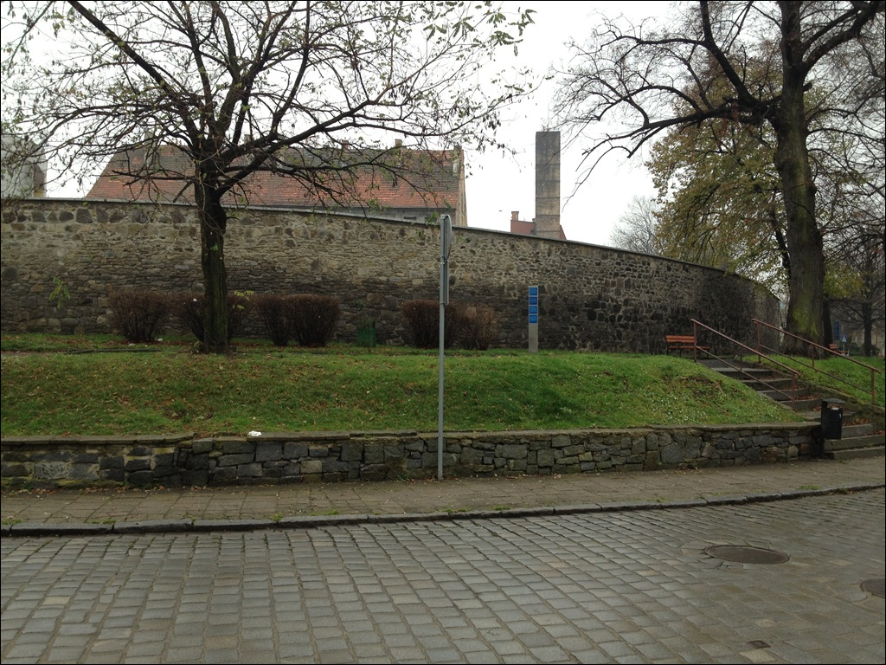

Ruiny ¶redniowiecznych murów obronnych
Fragmenty starych murów obronnych wzniesione wkrótce po lokacji miasta (1292r.).
Zgodê na budowê wyda³ syn Bolka I ¦widnickiego - Bolko II Ziêbicki. Pierwsza wzmianka
¼ród³owa pochodzi z 1328r. Miasto otoczone by³o podwójnym murem, co by³o rzadkooeci±
na ¦l±sku. Prowadzi³ on wzd³u¿ dzisiejszej ulicy Pocztowej, Staszica, Brzegowej i Rybnej.
Wewnêtrzny mur siêga³ wysokooeci 6 m, zewnêtrzny by³ ni¿szy. Grubooeæ murów wynosi³a 1,5m.
Za murami by³a fosa wraz z obwa³owaniem ziemnym. Do miasta prowadzi³y 3 bramy: Ziêbicka,
Wroc³awska i Wodna zwana te¿ Mariack±. W naro¿nikach murów mie¶ci³y siê 4 wie¿e:
Garncarska, Piekarska, Katowska i Prochowa zwana inaczej Wisielcz± - ze wspomnianych
obiektów zachowa³a siê jedynie Baszta Prochowa. Mury zosta³y powa¿nie zniszczone w wyniku
wojen husyckich w XVw. i pó¼niej podczas wojny trzydziestoletniej (1618 - 1648). Po raz ostatni
fortyfikacji miejskich u¿ywano w czasie wojen ¶l±skich (1740 - 1763). Od 1819r. w zwi±zku z planowan±
rozbudow± miasta rozpoczêto wyburzanie murów, które trwa³o do 1880r. Do dzi¶ zachowa³y siê stare
fragmenty murów przy ul.Pocztowej i Brzegowej.